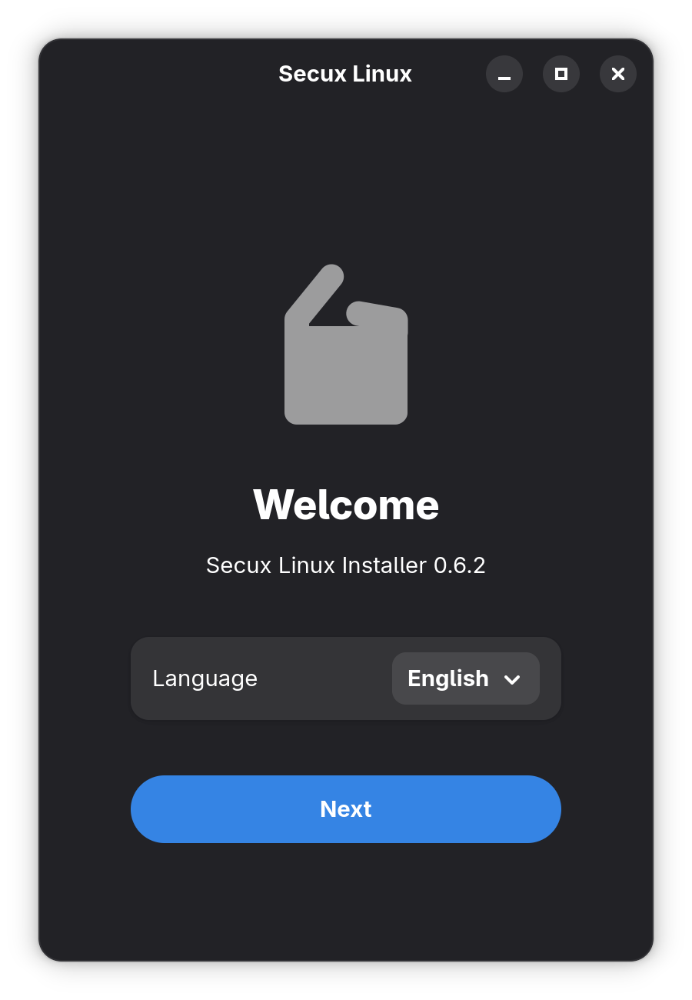

Online installation
2.50 GB · Downloads packages during installation.
A hardened Linux distribution that integrates TPM 2.0, defense-in-depth practices, and novel encryption mechanisms to protect against sophisticated attacks.
2.50 GB · Downloads packages during installation.
7.00 GB · All packages are included in the image.
Save the ISO and its signature in the same folder. Import the Kolbanidze public key from keys.openpgp.org by its full fingerprint.
gpg --keyserver hkps://keys.openpgp.org --recv-keys CE48F2CC9BE03B4EFAB02343AA0A42D146D35FCERun the command for your image in that folder. Check that GPG reports a good signature and that the primary key fingerprint matches CE48 F2CC 9BE0 3B4E FAB0 2343 AA0A 42D1 46D3 5FCE.
Online installation
gpg --verify SecuxLinux-online-2026-11-23_17-00.iso.sigOffline installation
gpg --verify SecuxLinux-offline-2026-11-23_17-00.iso.sig
In-Depth Protection complements LUKS2 encryption by adding an extra layer of cryptographic protection on top of the TPM, providing defense against hardware-based attacks.
Every stage of the boot process is verified by default,providing protection against Evil Maid attacks. If TPM-based protection is enabled, any unauthorized modification to boot settings will require a recovery key.
The linux-secux kernel employs various kernel protection technologies to reduce the attack surface and eliminate classes of vulnerabilities (CFI, memory hardening, etc). It can be selected during installation.
| Hardware | Minimum | Recommended |
|---|---|---|
| Processor | x86_64 | Multi-core x86_64 |
| Memory | 1 GB | 4 GB or more |
| Storage | 15 GB | 30 GB SSD |
| Platform | UEFI | UEFI, TPM 2.0 |
Choose GNOME, KDE Plasma or a console-only system in the installer.